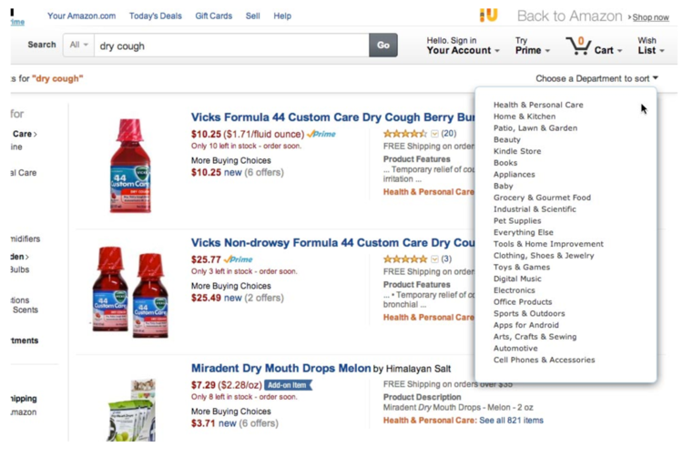
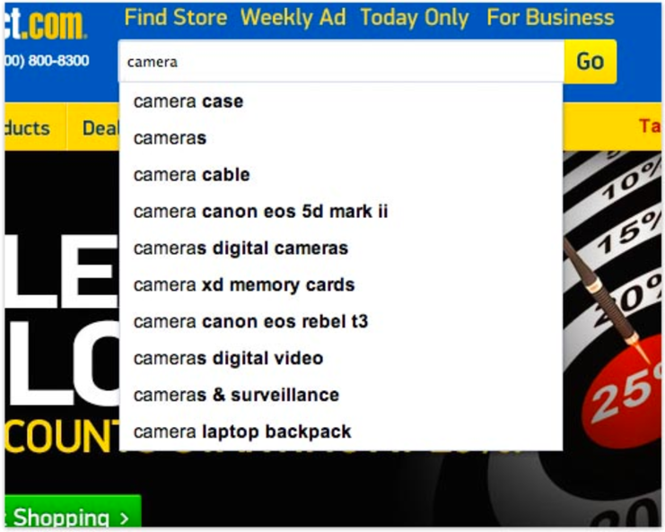

The search field represents the initial step of the user’s search process, it’s design can influence the user’s entire approach to how they find products on the site.
Depending on the company needs, one option can be more prominent than the other. For example, if the search field is to be more prominent, certain design tweaks have to be implemented.
There are three elements to consider:
Optionally, it may be a good idea to dynamically change the contrast of the search field on certain pages. For example, when user is already viewing a product he was interested in.
During testing, the more prominent the search field was featured on a test site, the more the test subjects regarded it as the site encouraging them to search (instead of navigating via the categories). therefore, in industries where search is the preferred product finding strategy, it can be beneficial to “promote” the search field with a prominent design and placement, especially on the user’s landing page (usually the homepage).
On the other hand, in industries where the majority of users will generally prefer to use category navigation (most often because they don’t yet know which exact product they want or what it’s called), or in case the site’s hierarchy is completely flat, a less attention-grabbing search field design may be employed to encourage category navigation over search.
There are at least 12 main types of query search found in usability study of 50 ecommerce sites.
| Query Type | User behavior | How you can support it |
|---|---|---|
| Exact Search “Keurig K45” | Searching for specific products by title | Basic keyword matching, along with support for multiple title variations and intelligent handling of misspellings |
| Product Type Search “Sandals” | Searching for groups or whole categories of products | Support for synonyms as well as categories that aren’t part of the site’s navigation / hierarchy |
| Symptom Search “Stained rug” | Searching for products by querying for the problem they must solve | Symptom database mapping “symptoms” to “cures” (i.e. problems to solutions) |
| NonProduct Search “Return policy” | Searching for help pages, company information, and other nonproduct pages | Search engine must index the entire website, not just products |
| Feature Search “Waterproof cameras” | Searching for products with specific attributes or features | Intelligent parsing of product specifications (i.e. structured product data) |
| Thematic Search “Living room rug” | Searching for categories or concepts that are vague in nature or have “fuzzy” boundaries | Interpretive labelling of products and categories |
| Relational Search “Movies starring Tom Hanks” | Searching for products by their affiliation with another object | Association data linking products and objects, ideally specifying the nature of the relationship too |
| Compatibility Search “Lenses for Nikon D7000” | Searching for products by their compatibility with another item | Compatibility database mapping compatible products to one another |
| Subjective Search “Highquality kettles” | Searching for products using nonobjective qualifiers | Handling of quantifiable singleattribute degrees (e.g. “cheap”), quantifiable but multiattribute mix (“value for money”), and tastedbased (“delicious”) qualifiers |
| Slang, Abbreviation, and Symbol Search “Sleeping bag 10 deg.” | Searching for products using various linguistic shortcuts | Synonym mapping of slangs, abbreviations, and symbols, as well as interpretation of symbol intent (ranges, modifiers, etc) |
| Implicit Search “[Women’s] Pants” | Forgetting to include certain qualifiers in the search query due to one’s current frame of mind | All available environmental variables must be used to infer any implicit aspects of the user’s query |
| Natural Language Search “Women’s shoes that are red and available in size 7.5” | Searching in full sentences rather than bundles of keywords | Intelligent parsing and deconstruction of the user’s query |
Trying to sort site wide search results on most e-commerce sites typically end up a mess, with irrelevant search results being propelled to the top of the list as users sort by price, customer ratings, etc.
Notice how the sorting options have been disabled entirely.
Properly implemented autocomplete feature is not about speeding up the search process but rather about guiding the user and lending them a helping hand in constructing their search query.
Autocomplete feature is proven to directly alter the how and what the user is searching for. It is critical to follow a number of design and interaction patterns to ensure that autocomplete design aligns with user expectations.
Any auxiliary data in the suggestion – such as category scopes or number of matches – should be styled differently from the actual suggested search terms. Otherwise, the user won’t be able to tell at a glance what is (and isn’t) part of the suggested search terms.
Having a separate scroll area within an already interactive widget is a recipe for interaction disaster, and should be avoided in favour of simply having the widget expand to its natural size. Furthermore, the list of autocomplete suggestions should be kept to a maximum of around 10 items to avoid inducing choice paralysis.
It’s a good idea to style the entered and suggested termsdifferently so the user can easily tell what’s suggested.
While some of the test subjects, particularly those aged 50+, would use the mouse to select autocomplete suggestions, most subjects navigated the suggestions using the keyboard arrow keys.
It’s important that the hovered autocomplete suggestion is highlighted and invokes the “hand” cursor, to make it 100% obvious to the user that these are indeed clickable links and to underscore which suggestion is about to be submitted.
Highlight autocomplete suggestions which have been previously visited by the user.
Clearly separating the autocomplete suggestions is key to enabling users to scan the list and tell the suggestions apart from one another.
Search scopes are one of the key differences between e-commerce onsite search and general web search. E-commerce sites have their products organised in categories which in turn can be used as “search scopes”. This allows users to limit the boundaries of their search to a specific category.
When it comes to the implementation details:
Sorting and filtering of search results is a vital part of users finding the right products among the results. In a perfect world, there should be little need for these functionalities, but user will never be able to make perfectly specified queries, simply because many will be at a stage in their purchase decision process where they haven’t fully decided or realised what they are looking for.